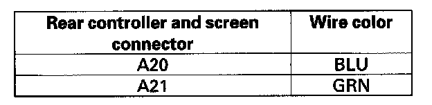
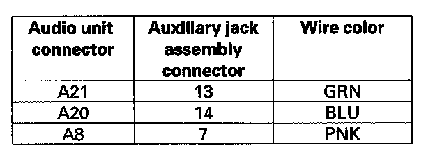

Wired headphone sound is weak, distorted, volume does not change, or there is no sound
Wired headphone sound is weak, distorted, volume does not change, or there is no sound1. Substitute a known-good wired headphone set and recheck.
Does the symptom go away?
YES - Original wired headphone set is faulty.
NO - Go to step 2.
2. Plug the wired headphones into the other ports of the auxiliary jack assembly to check their condition.
Do all the ports have the same symptom?
YES - Go to step 3.
NO - Faulty auxiliary jack assembly.
3. Check that the wired headphone jack is properly connected.
Is the headphone jack connected properly?
YES - Go to step 4.
NO - Reconnect the wired headphone connector, and recheck the function.
4. Disconnect the auxiliary jack assembly 14P connector and rear controller and screen 24P connector.

5. Check for continuity between rear controller and screen connector A (24P) and body ground according to the table. Then check same terminals for continuity to the harness shield terminal A9.
Is there continuity?
YES - Short in the wire between the rear controller and screen unit and the auxiliary jack assembly. Replace the appropriate shielded harness.
NO - Go to step 6.

6. Check for continuity between the rear controller and screen connector A (24P) and auxiliary jack assembly 14P connector according to the table.
Is there continuity?
YES - Faulty auxiliary jack assembly.
NO - Open in the wire between the rear controller and screen and the auxiliary jack assembly. Replace the appropriate shielded harness.